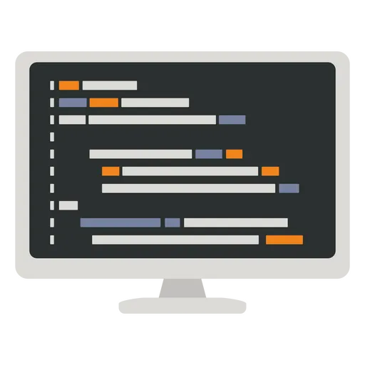
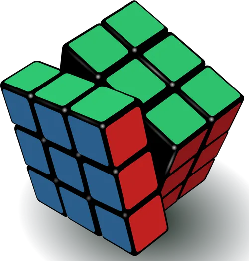
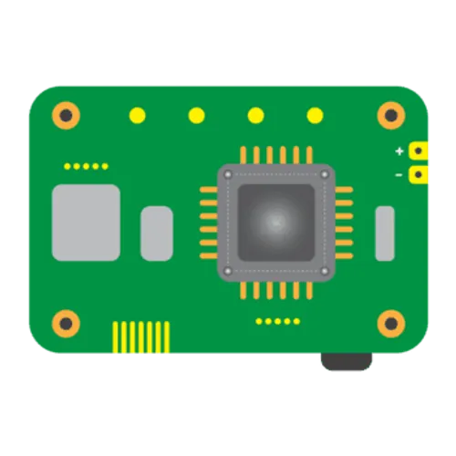

Sobre mim
Meu nome é Enzo Versiani, tenho 16 anos e sou apaixonado por tecnologia e tudo que envolve o mundo nerd. Atualmente sou estudante e programador amador, participando ativamente de projetos pessoais e de Iniciação Científica voltados à automação, eletrônica e desenvolvimento de software.
Formação & Trajetória Acadêmica
- Instituto Federal do Espírito Santo – Campus Serra
- Curso Técnico em Mecatrônica Integrado ao Ensino Médio
- Participação em projetos de Iniciação Científica (Robótica e Programação)
Projetos
Agente Inteligente para Geração Automatizada de Relatórios no Manejo do Ácaro-Rajado na Cultura de Morango
Projeto de Iniciação Científica
Parte de um projeto de Iniciação Científica, é um agente de IA que gera descrições textuais, que junto com gráficos simplificados, ajudam na compreesão por parte de agricultores de diferentes níveis de formação de dados complexos nas contínuas amostragens de plantios de morango.
Desenvolvimento e testes de uma placa de aprendizagem do ESP32
Projeto de Iniciação Científica em andamento
Neste projeto de iniciação científica, será desenvolvido um robô da categoria “robô de resgate”, voltado para competições de robótica nos moldes da Olimpíada Brasileira de Robótica (OBR). O processo abrangerá todas as etapas de criação, desde a prototipagem e modelagem 3D até o desenvolvimento das placas de circuito (PCBs) e a programação do robô. O objetivo é preparar o robô para competir na OBR 2026, promovendo ao longo do percurso o aprimoramento de conhecimentos e habilidades técnicas na área de robótica.
Além do Observável
Proposta para a Mostra de Astronomia do Espírito Santo (MAES)
Além do Observável, é um projeto prático, que possui como principal finalidade, garantir que a astronomia seja um campo acessível e inclusivo para todos, permitindo que pessoas com deficiência visual possam explorar, aprender e contribuir para o nosso entendimento do universo. O foco central desse trabalho é tornar a astronomia, uma área disponível e, principalmente, um sonho possível, além de proporcionar uma maior inclusão e diversidade no campo científico.
Robótica Educacional
Projeto de Extensão
O projeto de extensão, realizado ao longo de 2023, teve como foco principal a construção, prototipação e desenvolvimento de sistemas de automação e segurança aplicados à área de domótica. Conhecido como Casa Inteligente, o projeto utilizou microcontroladores e sensores simples e de fácil acesso, demonstrando que a automação residencial pode ser implementada de forma acessível e de baixo custo. Com base em uma metodologia ativa de ensino e aprendizagem, o projeto possibilitou o desenvolvimento de diversos outros protótipos e experimentos complementares durante o seu período de execução.
HDW-UTILS
Biblioteca Arduino desenvolvida para facilitar operações repetitivas na programação de microcontroladores ESP32 e Arduino.
A HDW-UTILS é uma biblioteca para microcontroladores como Arduino e ESP32 criada com um simples propósito, simplificar trechos de código repetitivos e cansativos em sistemas embarcados, tais como: definições de pinos, sistema de delay assíncronos, etc.
Olimpíadas & Hobbies
Olimpíadas Científicas
- OBMEP — Menção Honrosa [2022]
- OBA — Ouro [2023/24/25], Prata [2022]
- OIMSF — Ouro Nacional/Regional [2024]
- Canguru — Ouro [2024], Prata [2025]
- Mandacaru — Ouro [2023/25], Prata [2024]
- OIMC — Bronze [2024]
- OBS — Prata [2025]
- OBRL — Ouro [2023]
Aprofundamento em Matemática
- PIC – Programa de Iniciação Científica da OBMEP [2024]
- POTI – Polo Olímpico de Treinamento Intensivo [2024–2025]
Hobbies
-
Xadrez
Pratico xadrez rotineiramente e participo de pequenos campeonatos, colecionando algumas premiações nos mesmos.
-

Programação
Desenvolvo projetos pessoais por hobby, explorando linguagens, microcontroladores e novas tecnologias.
-

Cubo Mágico
CuboManíaco de plantão, resolvo alguns tipos de cubos de rubik diferentes e participo de competições raramente.
-

Robótica
Desde o ensino fundamental inserido nessa área, desperta meu interesse para além dos projetos de pesquisa e extensão, se tornando uma espécie de lazer com pequenos projetos pessoais.